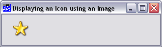

You have seen how icons can be displayed using the Picture property. Other uses of icons are described below.
Firstly, you can associate an icon with a Form or so that the icon is displayed (by Windows) when the Form is minimised. This is done using the IconObj property. For example, the following expressions would associate the UK Flag icon distributed with Visual Basic with the Form 'F1'. This icon would then be displayed when 'F1' is minimised.
'star'⎕WC'Icon'('Shell32.dll' ¯43)
'F1' ⎕WC 'Form' ('IconObj' star)The IconObj property also applies to the Root object '.'. This defines the icon to be displayed for your application as a whole when the user toggles between applications using Alt+Tab. It is used in conjunction with the Caption property which determines the description of your application that is shown alongside the icon, e.g.
'MYIcon' ⎕WC 'Icon' ...
'.' ⎕WS ('IconObj' MYIcon) ('Caption' 'My System')An icon can be displayed using the Image object. This object is used to position one or more Icon objects (or Bitmap objects) in a Form or Static. It can also be used to draw an icon on a Printer. If you make the Image dragable, you will be able to drag/drop the icon. The following example displays a dragable Icon at (10,10) in a Form. It also associates the callback function 'Drop' with the DragDrop event so that this function is called when the user drag/drops the icon.
'F1' ⎕WC 'Form' ('Event' 'DragDrop' 'Drop')
'star'⎕WC'Icon'('Shell32.dll' ¯43)
'F1.I' ⎕WC 'Image' (10 10) ('Picture' star)
F1.I.Dragable←2
Notice that setting Dragableto 2 specifies that an object is fully displayed while it is being dragged. Setting Dragable to 1 causes only the bounding rectangle around the object to be dragged.